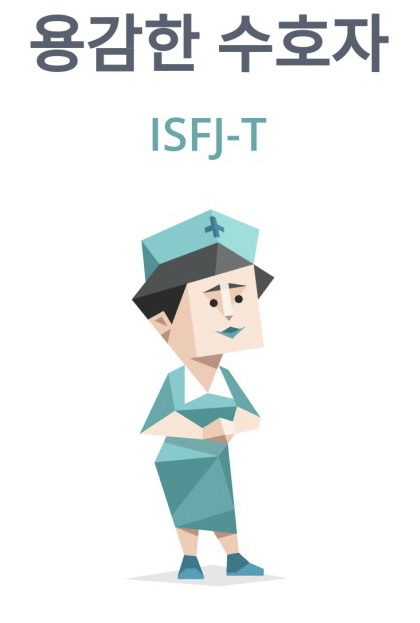
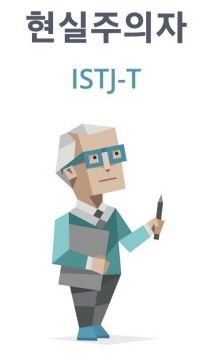
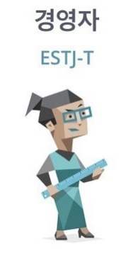
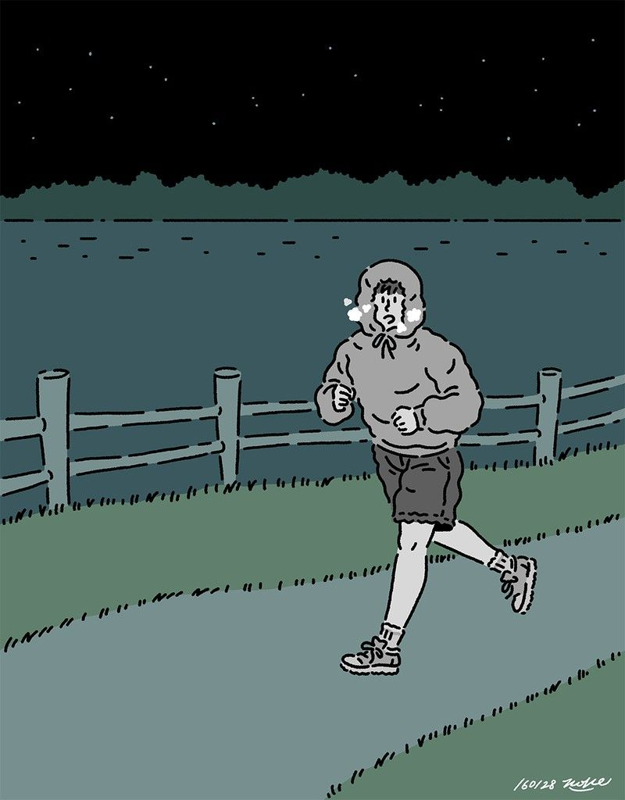
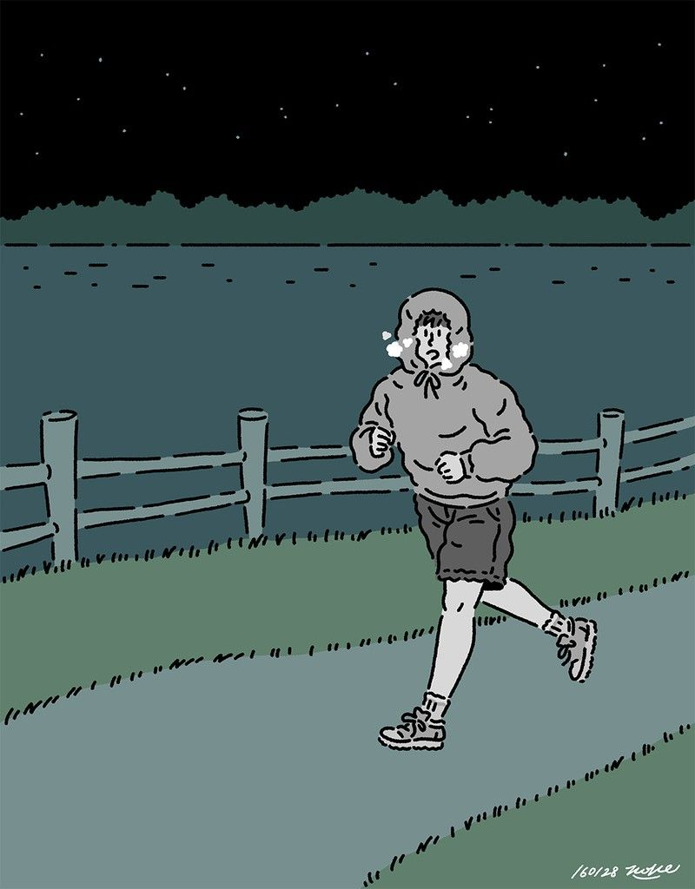

음악 듣기와 밤 산책을 좋아합니다!
그렇다고 혼자 있는 것 만을 좋아하는 것은 아니에요!
오히려 누군가와 같이 하는 것은 무엇이든 좋아한답니다 ^0^
가장 좋아하는 노래는 coldplay의 viva la vida 입니다 🙂
MBTI



ISFJ > ISTJ > ESTJ로 변해가면서 이제 저도 제가 어떤 성격인지 잘 모르겠습니다...
열심히 살고 싶지만 항상 실패하는 J입니다...😢
My Service
✅ 출석체크 어플 ✅
방학만 되면 공부하자고 마음을 먹어도 항상 침대에서 못 나오기 일쑤입니다..
갓생을 살고 싶지만 항상 실패하는 우리들을 위한 도서관에 출석체크하도록 하는 어플을 만들고 싶습니다!
특정 와이파이(ex) 도서관 와이파이)를 정해놓고 정해놓은 시간까지 그 와이파이에
연결되지 않으면 자신이 설정한 어떠한 패널티를 부여할 수 있도록 하는 어플입니다!
 
